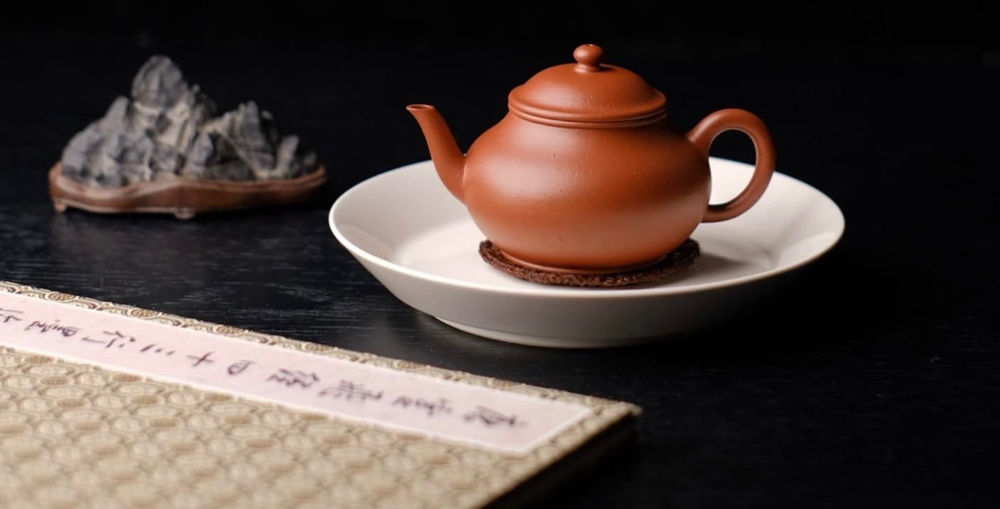
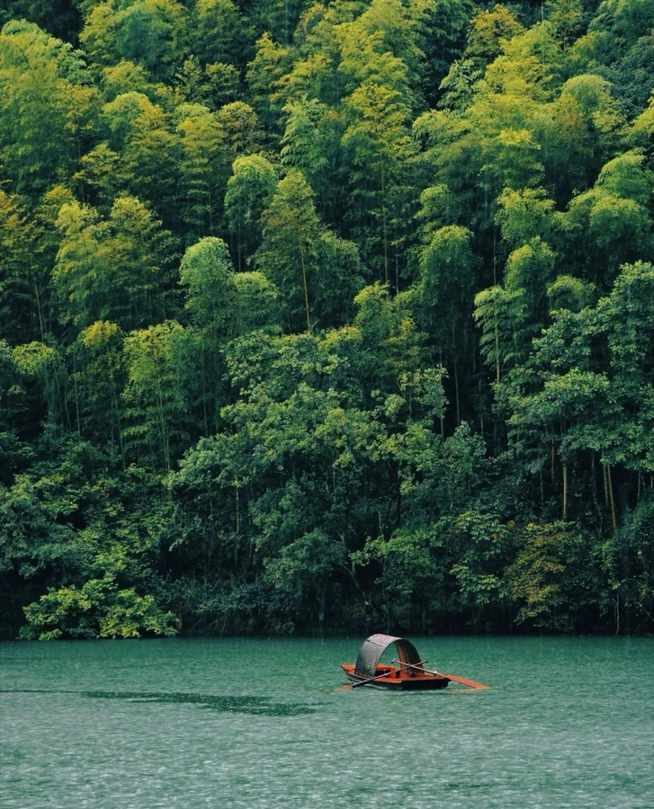
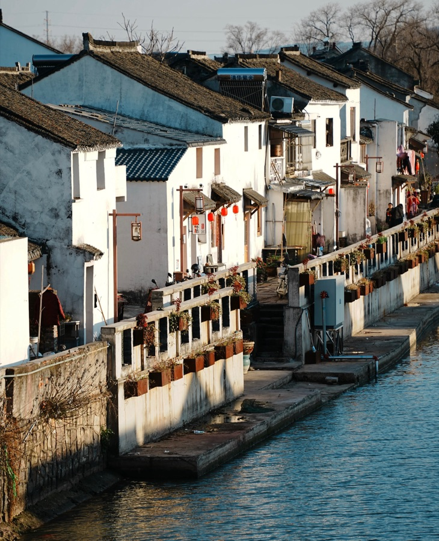
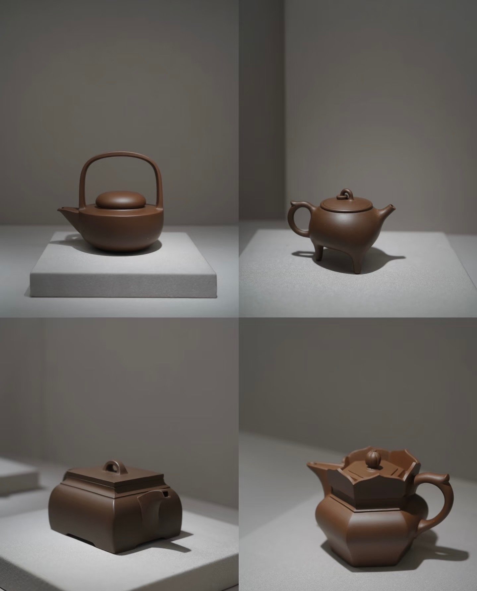
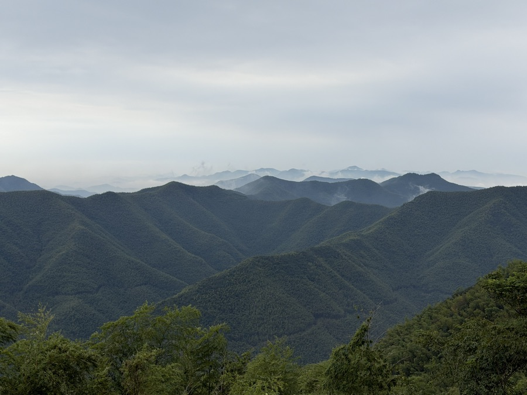
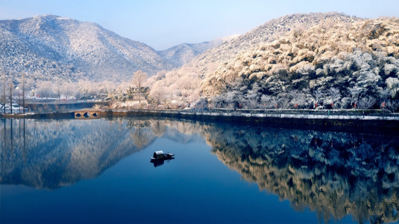
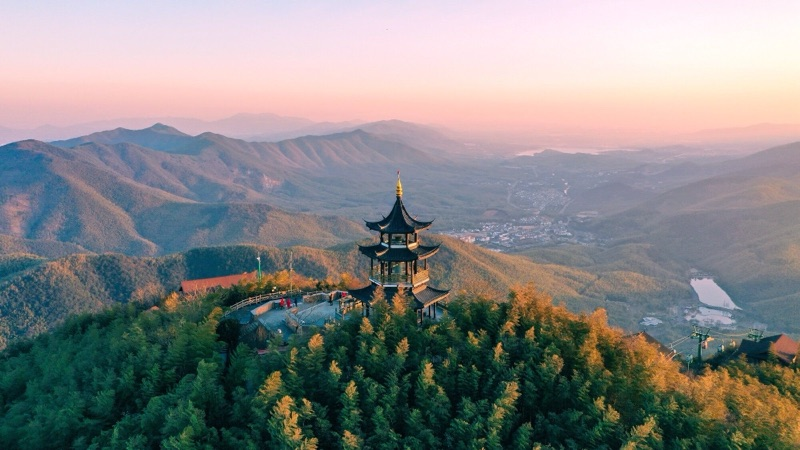
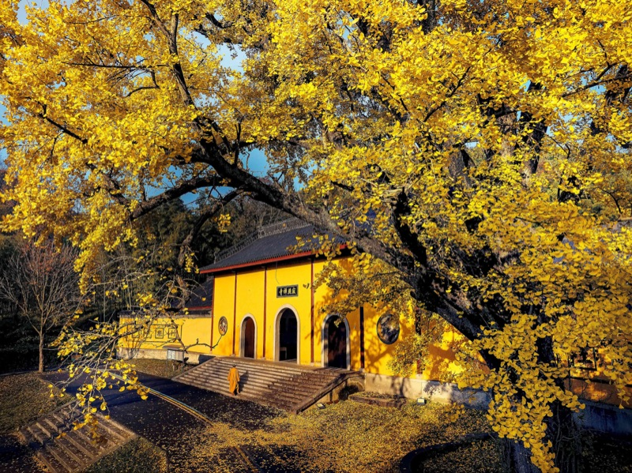

A Day in the Capital of Pottery & Bamboo
Rooted in the literati aesthetics of Jiangnan, our outing traces the footsteps of Song Dynasty poet Su Dongpo—from the ancient waterfront kilns of Shushan and the tactile craft of purple clay to the mist-veiled peaks of the Bamboo Sea.

Outing Schedule & Itinerary
07:30 – 17:30 · Full-Day ScheduleGather at designated meeting point in Suzhou
Depart promptly for Dingshu Town, Yixing (approx. 1h 30m drive)
Visit Shushan Ancient South Street (45 min)
Transfer by bus to the Pottery DIY Workshop (approx. 15 min drive)
Pottery DIY Workshop: make purple clay (zisha) cups
All participants start simultaneously, divided into 2 rooms
Transfer by bus to lunch restaurant
Group lunch in Dingshu Town
Cutlery provided; caters to both Chinese and Western palates; please notify dietary restrictions in advance
Transfer by bus to Yixing Bamboo Sea (approx. 30 min drive)
Ticket check & park entry; take shuttle bus to cable car station; ride cable car up the mountain (8 pax/car)
Queuing expected for shuttle bus and cable car
Tour Yixing Bamboo Sea (80 min, hike down the mountain)
Forest trails are relatively narrow; proceed sequentially in groups
Take shuttle bus to the park exit
Assemble at the exit for headcount; depart on time back to Suzhou
Arrive in Suzhou; trip concludes
Visitor Preparation & Field Notes
Outing Advisory👟 Footwear for Bluestone
Gunan Street is paved with historic Ming-Qing stone slabs and Zhuhai Reserve features mountain steps; comfortable walking shoes are recommended.
💍 Studio Etiquette
During the afternoon Zisha workshop, rings and bracelets may be removed while working with natural purple clay (which rinses clean with water).
🧥 Mountain Microclimate
Beneath the dense bamboo canopy and at the 611.5-meter summit of Yunu Peak, temperatures are 3–4°C cooler than the valley floor.
📦 Kiln Firing & Delivery
Completed Zisha mugs air-dry slowly for seven days before firing at 1180°C; finished pieces will be delivered after kiln cooling.
Yangxian: The Literati Sanctuary of Jiangnan
Situated at the geometric heart of the Shanghai–Nanjing–Hangzhou cultural triangle on the western bank of Lake Taihu, Yixing was known in antiquity as Yangxian (陽羨). Geographers describe its topography as "Three Mountains, Two Waters, and Five Parts Fields."

Six Cultural Pillars of Yixing
History · Craft · EcologySeven Millennia of Pottery
Centered in Dingshu Town, Yixing’s ceramic kilns have burned continuously since the Neolithic era. In the Ming Dynasty, scholars discovered that unglazed Zisha clay preserved the pure essence of steeped tea, making Yixing ware the most prized teaware in East Asia and 17th-century Europe.
Tang Imperial Tribute Tea
Centuries before purple clay teapots, Yixing was famous for Yangxian Tea. Tang poet Lu Tong wrote: "The Sovereign has not yet tasted Yangxian tea, yet ten thousand plants bloom." Each spring, fast riders carried fresh Yixing tea leaves to the imperial court in Chang’an.
Su Dongpo’s Second Homeland
Song Dynasty poet and statesman Su Shi (Su Dongpo) fell so deeply in love with Yixing’s streams and tea that he purchased land here, writing: "Buying fields in Yangxian, I shall grow old here; from the beginning, it was only for the beauty of its溪山 (streams and hills)."
The Karst Cave Sanctuaries
Beneath Yixing’s lush hills lie more than 80 subterranean limestone caverns, led by Shanjuan Cave (善卷洞)—celebrated as the historical setting of China’s classic romance The Butterfly Lovers (Liang Shanbo & Zhu Yingtai).
The Ecological Bamboo Sea
Over 18,000 hectares of Moso bamboo blanket Yixing’s southern mountains. Rainwater filtered through deep bamboo rhizomes emerges as sweet mineral springs—the primary headwaters feeding Lake Taihu.
Cradle of Modern Masters
This tranquil county town nurtured 20th-century painting masters Xu Beihong (徐悲鸿) and Wu Guanzhong (吴冠中), Zisha grandmaster Gu Jingzhou, and more than thirty Academicians of Science and Engineering.
Seasonal Gastronomy of Yangxian
Three Culinary TraditionsWumi Black Rice (乌米饭)
Glutinous rice steeped in the wild leaf extract of Vaccinium bracteatum (Nanzhu tree), steaming into a lustrous ink-black grain served with osmanthus honey.
Mountain Bamboo Shoots (竹海鲜笋)
Harvested directly from the Zhuhai forest floor and slow-braised in soy or simmered with cured pork in clear mountain spring broth.
Yangxian Red & Snow Tea (阳羡茶)
Velvety local black tea (*Yangxian Hong*) with notes of dried longan and orchid, alongside crisp spring green tea.
Shushan & Gunan Street: The Living Quarter
Resting at the foot of Shushan Hill along the ancient Li River (蠡河) canal, this 500-meter bluestone lane is the historic birthplace of Zisha ware. More than eighty percent of China’s celebrated purple-clay masters lived, fired kilns, and traded teaware along these waterfront courtyards.

Six Landmarks of Gunan Street
Walking Exhibition RouteWhy It Is Called "Shushan" (蜀山)
The hill beside the street originally stood isolated on the plain and was called Dushan ("Lonely Hill"). When Song poet Su Dongpo—a native of Shu (Sichuan)—settled here, its silhouette reminded him of home, and he renamed it Shushan ("Hill of Shu").
"Shop in Front, Studio in Back"
Sandwiched between Shushan Hill and the Li River, every townhouse follows a dual layout: wooden-shuttered showrooms face the bluestone street, while rear stone steps descend directly into the canal where cargo boats loaded fired pottery.
Residence of Grandmaster Gu Jingzhou
Visit the quiet courtyard where Gu Jingzhou (1915–1996)—revered as the modern "Sage of Zisha"—lived and refined minimalist geometric teapots. Today, single works from his hand command tens of millions at international auctions.
The 600-Year Ming Dragon Kiln
First lit in the Ming Dynasty and still firing today, the Qianshu Dragon Kiln ascends the hillside for 43.4 meters. Potters feed pine branches into 42 pairs of side stoke-holes (*Linmu*) to reach 1180°C in a living wood-ash atmosphere.
The 2,400-Year Li River Canal
Excavated under the guidance of minister Fan Li during the Spring and Autumn Period, this artificial waterway served as the "Ceramic Silk Road," linking Shushan’s kilns directly to Lake Taihu and the Grand Canal.
Dongpo Academy (东坡书院)
At the eastern foot of Shushan stands the classical academy built on the site where Su Dongpo lectured local scholars and planted crabapple trees, preserving Ming-Qing halls and inscribed stone tablets.
The Zisha Studio: Hand-Built Purple Clay
Unlike porcelain spun on a potter’s wheel, authentic Yixing Zisha ware is never thrown. Because purple clay stone-ore is rich in quartz, mica, and hematite, artisans developed the intangible heritage technique of Slab-Beating (*Da Shentong* 打身筒)—pounding clay sheets with wooden paddles and joining vessels entirely by hand.

"Five-Color Earth" (五色土): The Three Classic Ores
Huanglongshan Mineral SpecimensZini (Purple-Brown Clay)
Mined from deep rock strata, Zini fires to a warm chestnut-aubergine hue. Its balanced plasticity makes it ideal for hand-building and exceptional for black tea, oolong, and coffee.
Zhuni (Vermilion Clay)
High in natural iron oxide, Zhuni contracts tightly in the kiln to produce a luminous cinnabar-terracotta surface with a clear, bell-like resonance when tapped.
Duanni & Lvni (Beige / Green Ore)
A natural geological intergrowth of green and purple mudstone that fires to warm antique beige-gold with subtle quartz speckles—prized for showcasing calligraphic engravings.
The Alchemy of Raw Ore Clay
原礦泥料煉金術The "Alchemy" of Raw Ore Clay
Unlike river clay, Zisha begins as solid rock strata deep inside Huanglongshan. Through open-air weathering, dark cellar aging (Chenfu), and intensive kneading (Lianni), stone is transformed into supple, living clay.
Zisha Teapot & Vessel Making Process Flowchart
紫砂製壺工藝流程圖 · 10 Traditional StagesEvery authentic Yixing vessel passes through ten disciplined hand-building stages before entering the kiln:
Clay Preparation
泥料準備Selecting weathered raw ore & aged cellar mudstone.
Kneading & Refining
煉泥Consolidating damp clay to remove air pockets & align grains.
Beating the Slab
打身Pounding clay with a heavy wooden paddle into an even slab.
Paddling the Body
拍身 (圍身筒)Wrapping the clay strip into a hollow cylinder on the turntable.
Refining the Form
拍身定型Gently paddling the cylinder walls to curve and burnish the body.
Making the Spout
製作壺流Rolling and tapering a hollow clay cone for a smooth water pour.
Spout & Handle
製作壺流 / 把手Sculpting an balanced handle & aligning it with the spout.
Vessel Assembly
組裝Joining body, foot, handle, and spout with fine clay slip.
Natural Drying
乾燥Slow shade-drying to evaporate moisture without cracking.
Kiln Firing
燒製High-temperature sintering at 1160–1250°C to vitrify the ore.
Comparison of Zisha Clay Characteristics
泥料特性對比表 · Technical SpecificationsHow raw mineral color, kiln firing temperature, shrinkage rate, and pore density determine the ideal tea pairing:
| Clay Type (泥料) | Raw Ore Color (原礦顏色) | Fired Color (成品顏色) | Firing Temp (燒結溫度) | Shrinkage (收縮率) | Recommended Teas (適泡茶類) |
|---|---|---|---|---|---|
| Purple Clay (紫泥 Zi Ni) | Dark Purplish-Brown (深紫褐) | Brownish-Red (棕紅褐) | 1160–1200°C | 10–12% | Pu’er, Dark Tea (普洱、黑茶) & Rich Coffee |
|
Red / Cinnabar Clay (紅泥 / 朱泥) 朱泥難做：收縮高 · High shrinkage makes Zhu Ni challenging to craft |
Reddish-Orange Brown (紅橙褐) | Vermilion / Reddish-Brown (朱紅/紅褐) | 1180–1250°C | 14–18% | Oolong, Black Tea (烏龍、紅茶) |
|
Green / Fortified Clay (綠泥 / 段泥) 米黃 / 段泥 · Beige & Golden Symbiosis Clay |
Pale Celadon-Grey (青灰/素淺綠) | Warm Beige / Antique Gold (米黃/段泥) | 1170–1200°C | 11–13% | Green Tea, White Tea & Light Oolong (綠茶、白茶) |
Zhuhai Reserve: The Sea of Bamboo
Acclaimed as the "First Bamboo Sea of East China" (华东第一竹海), this ecological sanctuary spans more than 10,000 hectares across the mountain border where Jiangsu, Zhejiang, and Anhui meet—forming an unbroken ocean of swaying Moso bamboo and mirror-like spring lakes.

Six Scenic Wonders of the Reserve
Natural Landmarks
Mirror Lake & Ancient Jellyfish
Cradled between two emerald ridges, Mirror Lake is fed by bamboo-filtered spring water so pure that it sustains translucent Peach Blossom Jellyfish (Craspedacusta 桃花水母)—a living fossil lineage dating back 500 million years.

Yunu Peak (611.5m · Roof of Sunan)
The highest summit in southern Jiangsu. From Lingyun Pavilion (凌云阁) at the crest, visitors gaze across rolling waves of bamboo spanning three provinces simultaneously: Jiangsu, Zhejiang, and Anhui.

Jizhao Zen Temple & Ancient Ginkgo
Pause at the centuries-old Jizhao Zen Temple (寂照禅寺) tucked quietly amid golden autumn ginkgo trees and deep bamboo groves, or cross the wooden suspension bridge over Mirror Lake.
The Emerald Bamboo Corridor
A winding stone-paved avenue completely vaulted over by towering Moso bamboo culms. Sunlight filters through the canopy in shifting jade-green ripples.
First Source of Lake Taihu
Deep within the valley, rainwater purified by tens of thousands of acres of bamboo roots wells up from rock fissures to form a crystal-clear mountain stream—the very first headwater of Lake Taihu.
The Canopy Gondola
Stretching 1,500 meters from the valley floor to Yunu Peak, the aerial cableway glides directly above the treetops, offering panoramic views of the wind-swept "bamboo waves" (*Zhuhai*).